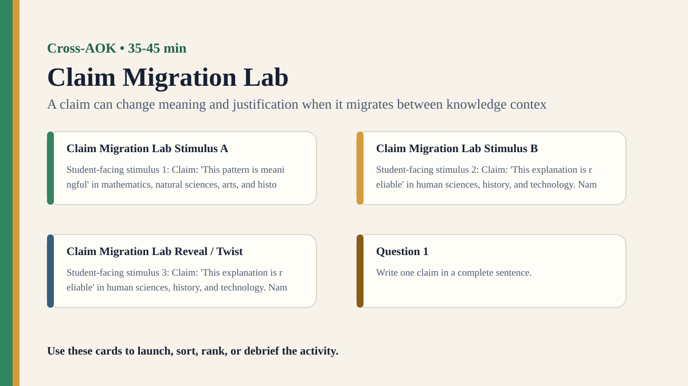

Premium draft resource
Claim Migration Lab Classroom Run Kit
Students move one knowledge claim across several AOKs and watch how evidence standards and language must change.
One-Minute Teacher Brief
Students move one knowledge claim across several AOKs and watch how evidence standards and language must change.
Big idea: A claim can change meaning and justification when it migrates between knowledge contexts.
Student Prompt
Inspect Claim Migration Lab Stimulus A. Record one first claim, the evidence you used, your confidence, and what would make you revise.
Concrete Stimulus Packet
Stimulus
Claim Migration Lab Stimulus A
Student-facing stimulus 1: Claim: 'This pattern is meaningful' in mathematics, natural sciences, arts, and history. Name the AOK, the method being used, and the standard of evidence you would apply.
Students inspect this exact card first and commit to a claim before hearing anyone else.Stimulus
Claim Migration Lab Stimulus B
Student-facing stimulus 2: Claim: 'This explanation is reliable' in human sciences, history, and technology. Name the AOK, the method being used, and the standard of evidence you would apply.
Use this for comparison, a second round, or a partner challenge.Stimulus
Claim Migration Lab Reveal / Twist
Student-facing stimulus 3: Claim: 'This explanation is reliable' in human sciences, history, and technology. Name the AOK, the method being used, and the standard of evidence you would apply.
Teacher reveal: connect the changed response to the big idea — A claim can change meaning and justification when it migrates between knowledge contexts.Actual Lesson Questions
| # | Question for students | Teacher key / cue |
|---|---|---|
| 1 | After inspecting Claim Migration Lab Stimulus A, what is your first knowledge claim? | Teacher cue: look for a clear claim, not just a description. |
| 2 | Which exact detail from Claim Migration Lab Stimulus A did you use as evidence? | Teacher cue: students should name visible words, data, source features, method features, or contextual clues. |
| 3 | What did you infer beyond the evidence? | Teacher cue: this is where assumptions, framing, models, or perspective usually appear. |
| 4 | How confident are you: 50%, 60%, 70%, 80%, 90%, or 100%? | Teacher cue: confidence is data for the debrief, not a grade. |
| 5 | What missing information would most improve the knowledge claim? | Teacher cue: push for method, source, context, comparison, or definitions. |
| 6 | What changes when a claim moves between AOKs? | Teacher cue: students should move from the classroom example to a general TOK issue. |
Student Task
Use the stimulus cards to complete the observation/inference/evidence/confidence grid, then answer one TOK knowledge question connected to Cross-AOK.
Teacher Key / Reveal
The key move is not the “right answer”; it is the moment students see how a claim can change meaning and justification when it migrates between knowledge contexts.
- Strong response: separates observation from inference.
- Strong response: names a method, source, model, language choice, context, or perspective.
- Strong response: revises confidence when new evidence or a new criterion appears.
- Weak response: gives only opinion or says “it depends” without criteria.
Classroom materials
Printable Pack and Cards
Open the classroom resource pack for stimulus cards, CSV card deck, and the activity visual prompt.
Visual Prompt

Setup Checklist
- Choose claims with flexible wording so they can plausibly move between AOKs.
- Make students revise the claim, not just relabel the evidence.
Ready-to-Use Examples
- Claim: 'This pattern is meaningful' in mathematics, natural sciences, arts, and history.
- Claim: 'This explanation is reliable' in human sciences, history, and technology.
Run Resources
- AOK migration grid: claim wording, evidence standard, method, uncertainty, revised claim.
- AOK cards listing typical evidence and caution points.
Teacher Language
- The same sentence may not make the same knowledge claim in a new AOK.
- What has to change so the claim becomes responsible in this context?
Sample Student Output
- In mathematics, meaningful meant provable structure; in the arts, it meant interpretive significance.
- We had to change 'reliable' into 'well-supported by archival evidence' for history.
Procedure
- Choose one broad claim and place it in one AOK context.
- Students identify what evidence would justify the claim there.
- Move the same wording to a second and third AOK context.
- Groups revise the claim so it fits each new context responsibly.
- Debrief why claims cannot always travel unchanged.
Debrief Questions
- Knowledge question: What changes when a claim moves between AOKs?
- Are words like evidence, explanation, and reliability stable across knowledge contexts?
- How can interdisciplinary work avoid flattening differences?
Adaptations
- Support: use two AOKs and one claim.
- Challenge: require students to identify a term that cannot migrate safely.
Extension Tasks
- Students use one TOK essay claim and migrate it across two AOKs.
- Build a class glossary of terms that shift across knowledge contexts.